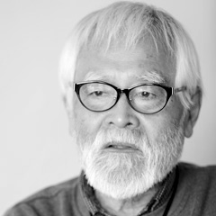
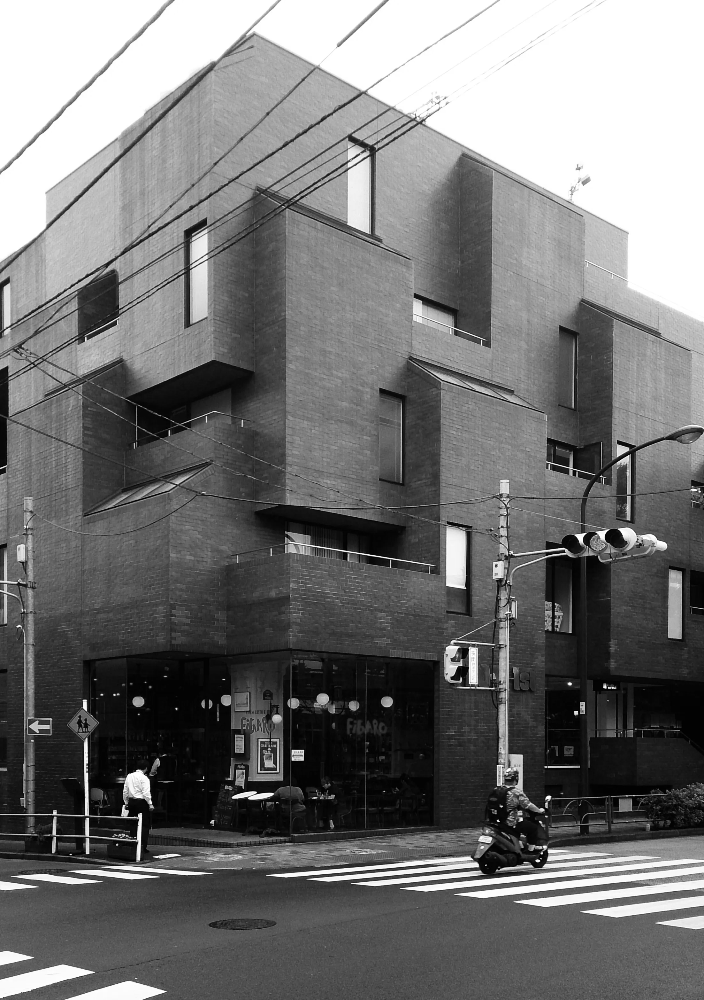
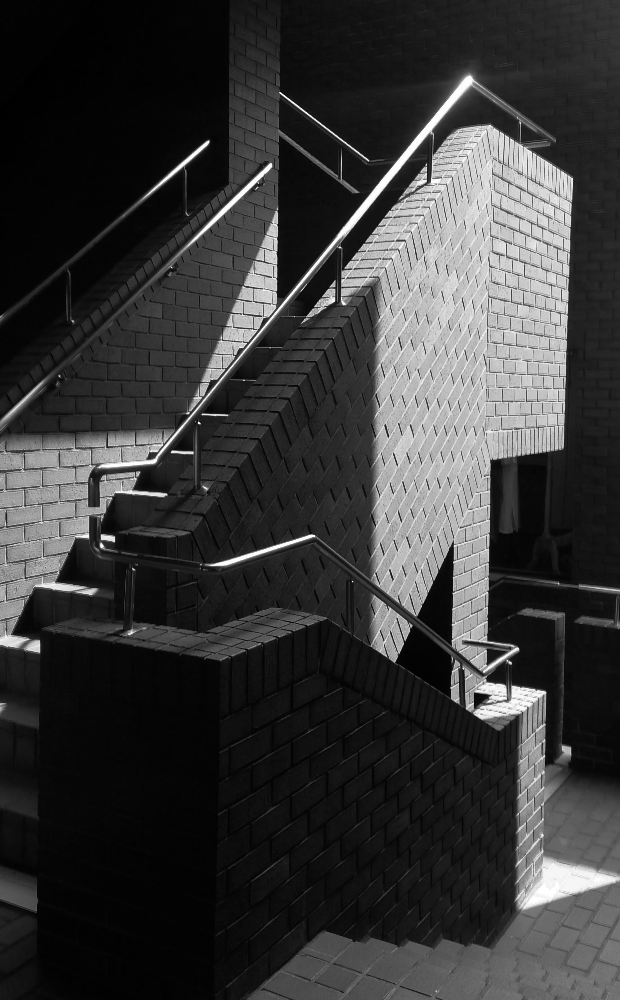
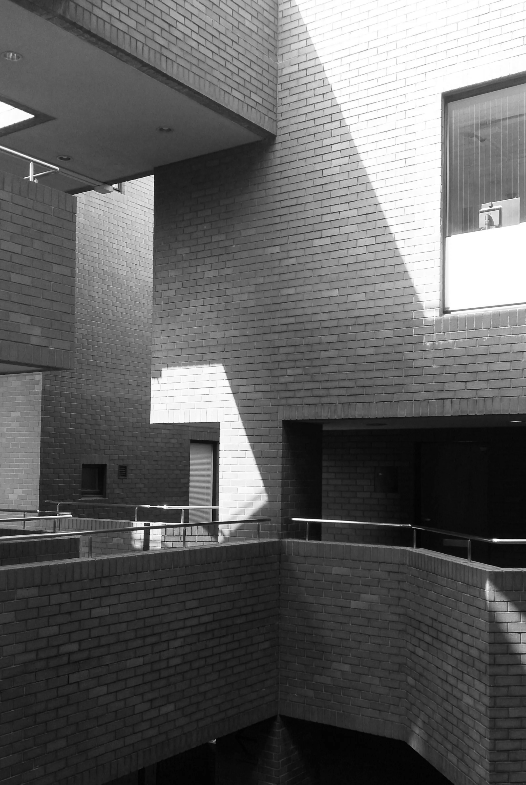
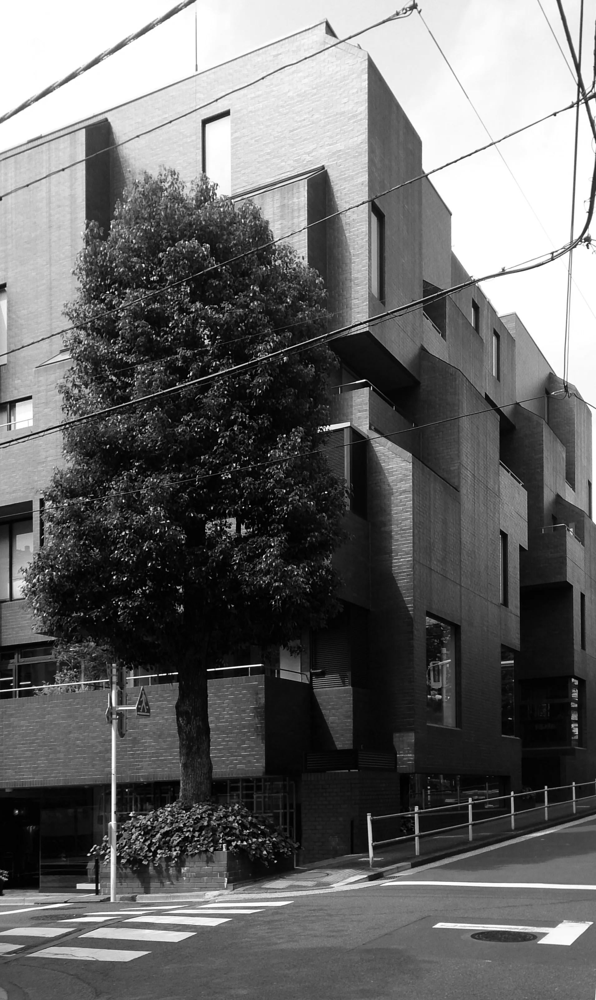

From 1st Building
프롬 퍼스트 빌딩

Kazumasa Yamashita야마시타 카즈마사
山下和正 · 1937–2019
Mixed-use Pioneer · 1970s Japan
Yamashita Sekkei Inc.
지금이야 굉장히 깔끔하게 정비된 모습을 보여주고 있지만 20세기 중반까지만 해도 오모테산도와 아오야마 주변은 작은 주택이 가득한 서민 주거지 였다고 합니다. 그러다가 1964년 도쿄 올림픽 경기장이 근처에 지어지면서 오늘날 상급지의 위치까지 이른 것이죠. 그때만 해도 우후죽순 진행되는 개발에 동네가 꽤나 혼란스러웠겠죠.
이런 과거 아오야마의 모습을 과감하게 표현한 건물이 근처에 있는데요, 프라다와 미우미우 그리고 젠틀몬스터를 지나서 네즈미술관을 향해 걸어가다 보면 별안간 묵직한 벽돌 더미를 마주할 수 있습니다. 건축가 야마시타 카즈마사에 의해 1975년에 준공된 주상복합 '프롬 퍼스트 빌딩'입니다. 이곳의 탄생 컨셉은 쇼핑과 미식, 그리고 주거가 섞인 라이프스타일을 제안하는 것이었다고 합니다.


그래서일까요, 여러 큐브들이 이리저리 섞인 모습이죠. 내부에서는 대각선을 활용하거나 부분적으로 바닥을 없애서 외부의 입체적인 형태를 한층 더 과감하게 이어가고 있습니다. 이 점에선 마치 리카르도 보필 건축물을 연상케 한달까요? 특이한 점은 누가 뭐래도 외부에 이어 내부까지 모두 벽돌 타일로 마감되어 있다는 것이 되겠죠. 요즘 하도 유리와 콘크리트를 많이 봐서 그런지, 이런 아날로그적 감성이 오히려 새로운 매력으로 다가올 때가 있죠.
특히 이곳이 보여주는 과감한 구조는 요즘 새로 생기는 건물들에 절대 뒤쳐지지 않다 보니, 좋은 의미로 굉장히 이질적인 느낌을 자아내고 있는데요. 그 시절에 다수의 부티크와 뷰티샵, 레스토랑을 품은 주택이라니 흔하진 않았을 것 같습니다. 이 건물이 들어서면서 아오야마에 이를 벤치마킹하는 곳들이 많이 들어섰다고 하니, 여러모로 과거에 이 동네를 대표하는 건축물이라고 할 수 있겠죠. 상층부에는 주로 사무실과 주택이 입주해 있는데다, 층마다 계속되는 레이아웃의 변화 덕분에 올라갈수록 더욱 고요한 공간을 마주할 수 있는데요.
그게 마치 도심 속의 고요를 위해 의도적으로 공간을 비워낸 것 같은 느낌을 준달까요?


